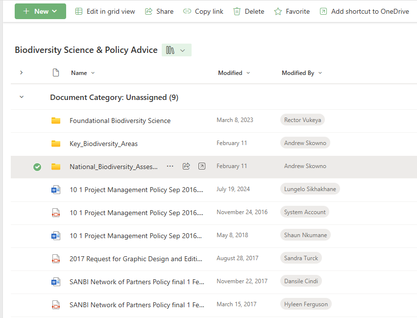
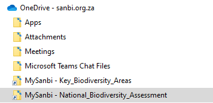

.gitignore
# R Environment Variables
.RenvironA collaborative website like the NBA requires that input data paths are robust and maintainable, particularly in instances where input data files exceed file size limitations for git repositories, or where input data may contain sensitive information. In these instances, data needs to be stored in a central, accessible data repository and R code reading from this repository need to be configured in a way that enables reproducibility no matter where the code file is run from.
There is a dedicated OneDrive folder for NBA data that can be accessed through MySanbi. The purpose of this repository is to store common input files for NBA indicators such as spatial data on ecosystem extent, ecosystem condition, and protected areas. The data in this repository represents the ‘one source of truth’ for all these datasets, ensuring that different analyses across the NBA use the same inputs. Contributors can also create folders containing input data specific to their modules in this space.
If you have been given permission to access this folder, you will be able to locate it via SANBI Teams:
In the top left corner of the MS Teams app, click on MySANBI
Scroll down the MySANBI home page until you see a section called SHARED DOCUMENT LIBRARIES, click on Biodiversity Science & Policy Advice
Click on the arrow to expand Document Category: Unassigned (9), and find the folder named National_Biodiversity_Assessment. Click to the left of this folder so that it is selected:


The purpose of an .Renviron file is to set environment variables for R, providing a secure and flexible way to configure R’s behavior and store sensitive information, such as API keys or database credentials, that should not be hardcoded into scripts or shared on platforms like GitHub. A great benefit for file paths in particular is that you can create one .Renviron file per project, and set up all your scripts to access the input data file path from this central location by calling the environment variable containing the file path from within your script.
Using .Renviron to manage file paths also means that when someone else needs to run your scripts, all they need to do is configure their own version of the .Renviron file to link to the input data folder as it is configured on their machine.
Never share an .Renviron file to a git repository. Always make sure that .Renviron is added to your .gitignore file. When you create a new repository in GitHub, select the R option under the .gitignore templates. This template file includes an entry for .Renviron
.gitignore
# R Environment Variables
.RenvironThis will gitignore any files called .Renviron regardless of where they are located in your repository.
Create a new R project/open an existing R project
Under the Files tab, click New File and select Text File
Name the file .Renviron
Open the file (within RStudio) to add variables
Each variable is added on a separate line, and should follow this format:
VARIABLE_NAME = value
variable names are always written in all caps, no spaces. You can use underscores as in the example
strings in variable values are stored without quotation marks
For new entries or edits to .Renviron to take effect, you need to restart your R session.
To add a file path to the NBA data repository, use the following format:
.Renviron
NBA_DATA = C:/Users/YourUserName/OneDrive - sanbi.org.za/MySanbi - National_Biodiversity_Assessment/dataYou can copy the file path from your Windows File Browser - just remember to switch the backslashes to forward slashes. Please use the specified variable name as illustrated here - this will make the collation of all the website Quarto files easier.
Use the R function Sys.getenv to call .Renviron variables from within your R code:
data_file_path <- Sys.getenv("NBA_DATA")list.files is a useful base R function for locating files within a folder and constructing a file path to those files. It can be used to find a specific file, or files matching a particular pattern (e.g. all files of type .qmd). This means that reading in data continues to function even if the data folder is reorganised or subfolders are renamed. If you use this function to search for a particular file, it will however return an empty value if that file has been removed from the directory or renamed.
Example code: using Sys.getenv and list.files to read land cover data from the NBA data repository
library(terra)
# Read NBA data file path from .Renviron
data_file_path <- Sys.getenv("NBA_DATA")
# Locate the file nlc2022_7class.tif in NBA data and construct a file path for it
lc_file_path <- list.files(path = data_file_path,
pattern = "^nlc2022_7class\\.tif$",
recursive = TRUE,
full.names = TRUE)
# Read in the file using terra package
lc <- terra::rast(lc_file_path)A tricky aspect of list.files is that the pattern argument expects a regular expression (to enable it to very precisely match search patterns). This makes constructing a search pattern for an exact file name (including the file extension) tricky, because in regular expressions the dot (.) indicates “match any character”. Therefore dots need to be escaped with \\ to make sure pattern sees it as part of the file name. The characters ^ and $ are anchors to ensure an exact match.
It is possible to find the file by searching for “nlc2022_7class” (without the .tif part) but this will potentially match with multiple files e.g. nlc2022_7class.csv or nlc2022_7class_reprojected.tif. The search function as coded here is set up to search the entire directory and all subdirectories, finding all files matching the specified pattern.
For the combination of Sys.getenv and list.files to work it is important that all contributors to the NBA data repository are mindful of potential search problems created by multiple files with similar or the same names stored in different folders. In the code example above the terra:rast function will generate an error if list.files returns multiple matches.